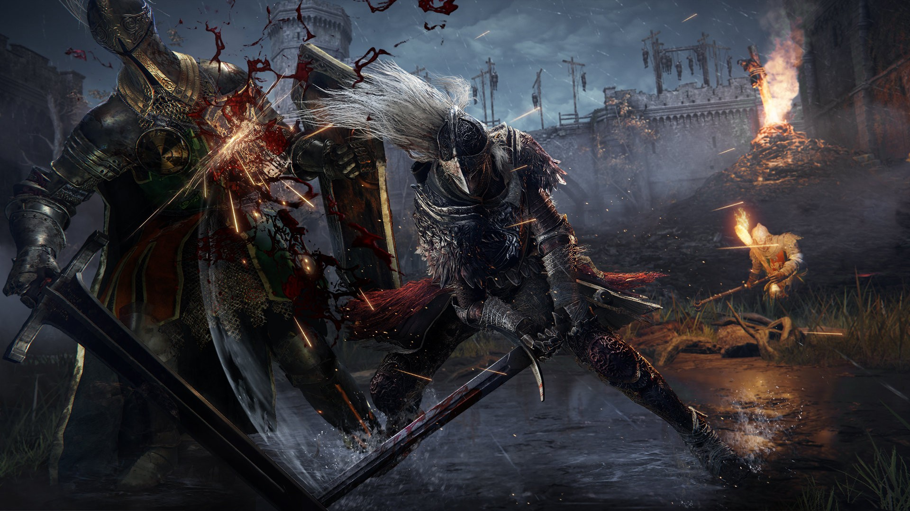
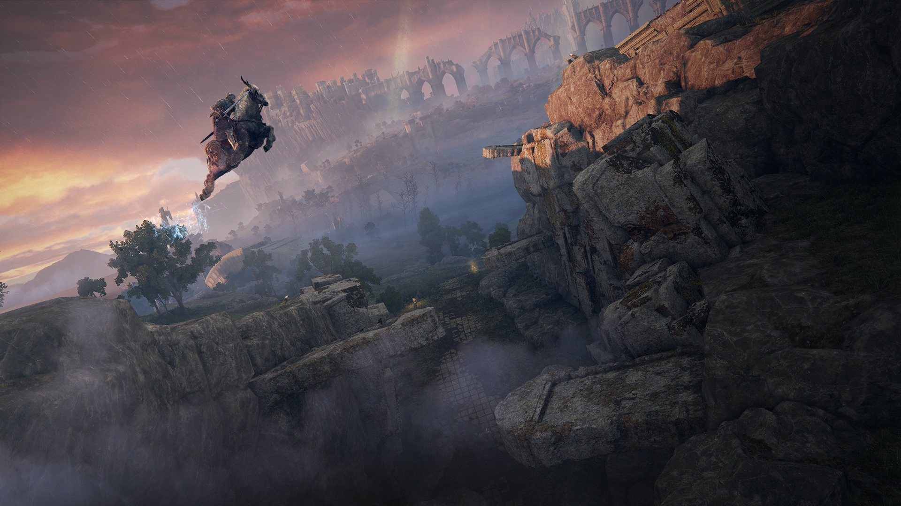
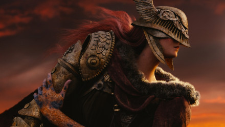
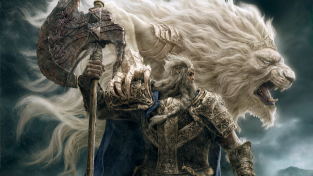
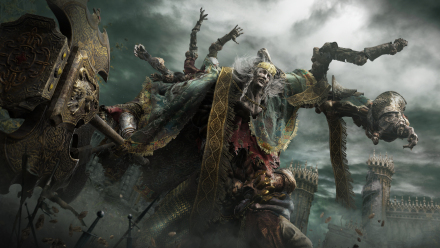
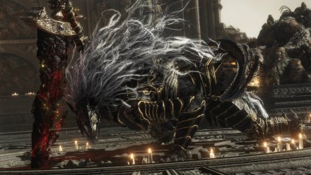
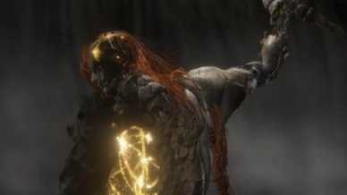
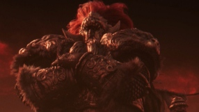
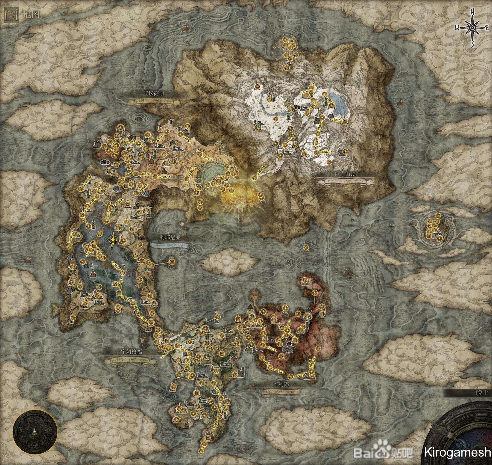
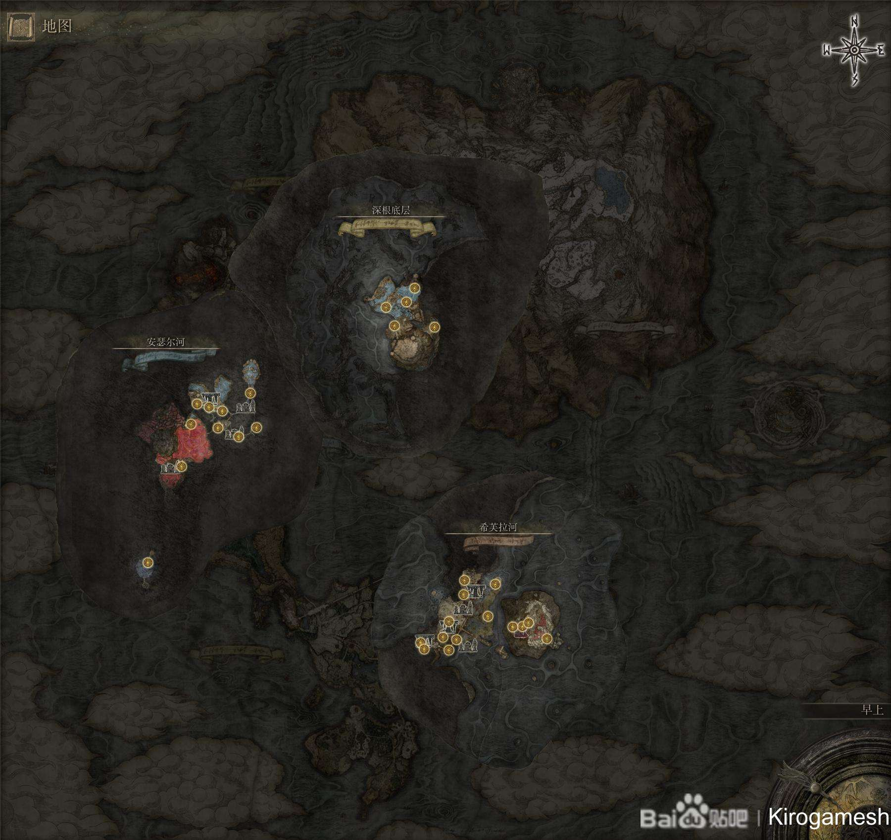

艾尔登法环
《艾尔登法环》是From Software开发、万代南梦宫发行的黑暗幻想风开放世界角色扮演动作游戏。于2022年2月25日于Steam、PlayStation 4、PlayStation5、XboxOne、Xbox Series X/Xbox Series S上发售。 该游戏让玩家走进辽阔的场景与地下迷宫探索未知，挑战困难重重的险境，同时体验登场角色之间的利害关系谱成的群像剧。
2022年11月，《艾尔登法环》获得IGN年度金摇杆奖。
基本信息
| 中文名 | 艾尔登法环 | 开发商 | From Software |
| 原版名称 | Elden Ring | 发行公司 | 万代南梦宫 |
| 别 名 | エルデンリング | 发行日期 | 2022年2月25日 |
| 游戏类型 | 开放世界、角色扮演 | 游戏售价 | 298 至 398 元 |
| 游戏平台 | PC(Steam) | 制作人 | 宫崎英高 |
| PlayStation 4 | 编剧 | 乔治·R·R·马丁 | |
| PlayStation 5 | 主要配音 | Aimee-Ffion Edwards、Martha Mackintosh | |
| Xbox one | 背景音乐 | 斋藤司、北村友香、宫泽翔衣、富泽泰、 | |
| Xbox Series X/Xbox Series S | 工藤吉三 | ||
| 地区 | 日本 | 游戏分级 | PEGI-16 |
背景设定
故事发生在名为“交界地”的地方，这里的人们拥戴永恒女王玛莉卡，也受到她的祝福。
所有接受祝福的人瞳孔中都有黄金一般的光芒，但也有些人因为各种原因失去了赐福，眼中的光芒消逝。这些人就被称为褪色者，并因此被逐出交界地。
某天因为作为祝福核心的“艾尔登法环”被击碎，祝福受到污染的半神们为了收集法环碎片发动了一场又一场的战争，导致世界变的满目疮痍，褪色者们因为法环破碎恢复了祝福。
而玩家们扮演的角色便是褪色者，玩家的目标即是收集法环碎片，挑战半神，最终成为交界地的王者并开辟新的时代。

|
 |  |
剧情角色(部分)
|
梅琳娜 |
菈妮 |
 玛莲妮亚 |
 玛莉卡 |
 葛孚雷 |
 葛德文 |
|
蒙葛特 |
 蒙格 |
 葛瑞克 |
|
 玛利喀斯 |
 拉达冈 |
蕾娜菈 |
|
 拉塔恩 |
拉卡德 |
场景地图
基本机制
《艾尔登法环》的世界自由开放。玩家可以在这个世界中收集各种各样的装备、道具，挑战各种Boss等。
世界地图
该作发生在被称为“交界地”的土地上，玩家能够通过地图感受到这个世界的规模，而在冒险中会在各处拾取到地图碎片，打开地图，会发现地图的尺寸又进一步放大。而在开图的过程中，即使是未探明的区域，在进入后也会在地图上有标示指引地图碎片的具体位置，让玩家行径路径更明确。开启区域地图之后，就能根据图中的图示来慢慢进行探索和冒险。

地上

地下
区域场景
艾尔登法环主世界“交界地”总共数个大区域，地上部分分别是宁姆格福，利耶尼亚，盖利德，亚坛高原，王城罗德尔，巨人山顶；地下部分分别是，深根底层、希芙拉河、安瑟尔河；天上的是逐渐崩毁的法姆·亚兹拉；除此之外亦有一个区域名曰米凯拉的圣树。
机制系统(部分)
战斗机制
游戏中战灰系统的加入为原本的战技系统加入了更多的自由度和多样性，质变系统也融入到了战灰中。自此可以根据对性能的需要甚至是对外观的偏好来搭配武器与战技。通过对武器战灰组合的把控，可以形成属于自己的战斗风格，也可以根据游戏进程，针对不同的敌人类型灵活地进行调整。
除了盾反之外，该作加入了叫做“防御反击”的机制，使用盾牌防御后使用重击便能使出。和弹反一样，防御反击以及跳跃的重击都能够破坏敌人架势，创造处决机会。玩家可在敌人失去平衡时、敌人处于睡眠时、或不被敌人发现背后偷袭时，可以对敌人发动处决。
玩家在与敌人对战时，可锁定敌人，以便对其跟踪式攻击。
召唤机制
玩家获得召魂铃之后，永久解锁召唤自身拥有的骨灰或傀儡的功能。当游戏界面左侧出现墓碑样式的图案，则可以召唤之，令其协助玩家战斗。
联机模式
除了单独探索广阔的开放世界“交界地”，游戏中亦支持玩家与其他玩家联机游玩探索，或是PVP对战。
游戏提供两种联机方式。一种是即时联机机制，玩家可以和好友联机，一起来对付敌人，或是进行你死我活的PVP切磋角斗。另一种是间接联机，玩家可以看到其他玩家的行动轨迹，死亡地点等等。在选完角色并迈进艾尔登法环的开放世界后，会有一个弹窗提示可以进行多人游戏。玩家可以通过菜单里的“多人联机游玩”选择自己想要的联机模式。
异常状态
游戏内有8种异常状态，其中发狂和骤死为仅褪色者能够获得的异常状态，其余的异常状态能够对所有敌方生效。玩家受到异常状态之后，会受到如下述效果的制裁、甚至直接死亡，而玩家亦可通过使用带有异常状态的武器、魔法、祷告以及特定道具对敌方进行重创。
玩家累计失衡之外的异常状态量表时，会显示自身累计量。
玩家可通过提升特定的量表抵抗异常状态，或使用苔药或部分祷告治愈除失衡之外的异常状态。
| 状态种类 | 状态效果 | 对应抵抗力 |
| 猩红腐败 | 累积突破量表界限后，会持续受到损伤 | 免疫力 |
| 出血 | 累积突破量表界限后，受到HP最大值一定比例的大幅伤害 | |
| 冻伤 | 累积突破量表界限后，受到HP最大值一定比例的伤害且一定时间内受到伤害增加 | 健壮度 |
| 催眠 | 累积突破量表界限后，造成长时间的失衡（受到数次剧烈攻击后会解除） | |
| 发狂 | 累积突破量表界限后，生命和专注值损失且造成硬直 | 理智度 |
| 骤死 | 累积突破量表界限后，立即死亡 | |
| 中毒 | 累积突破量表界限后，会持续受到损伤 | 抗死度 |
| 失衡 | 累积突破量表界限后，暂时失去平衡。 | 强韧度 |